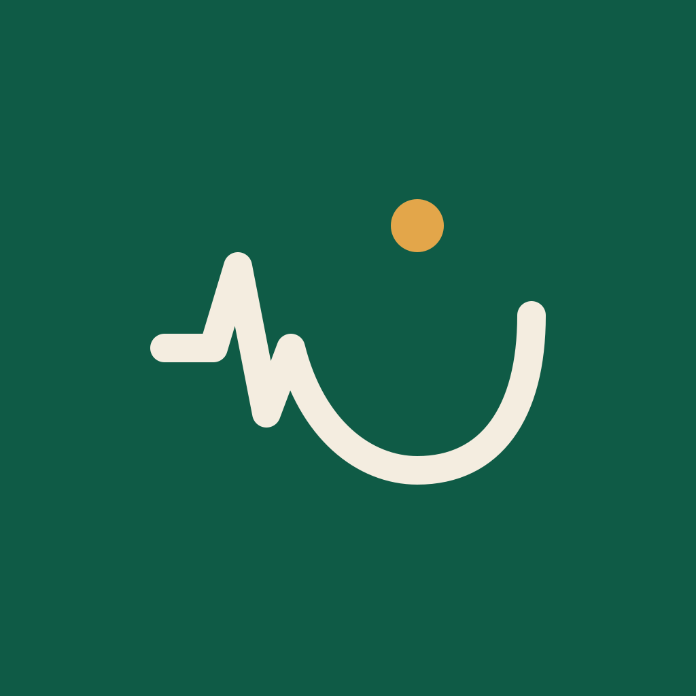
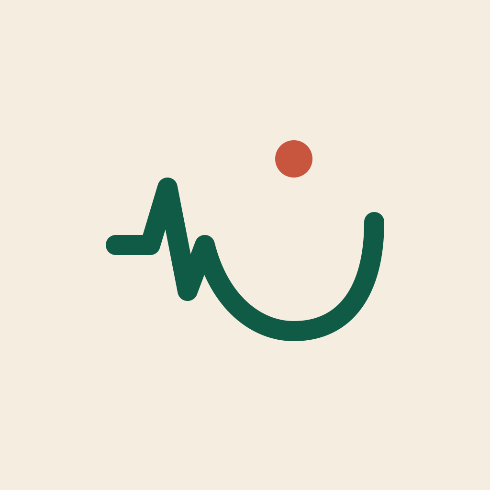
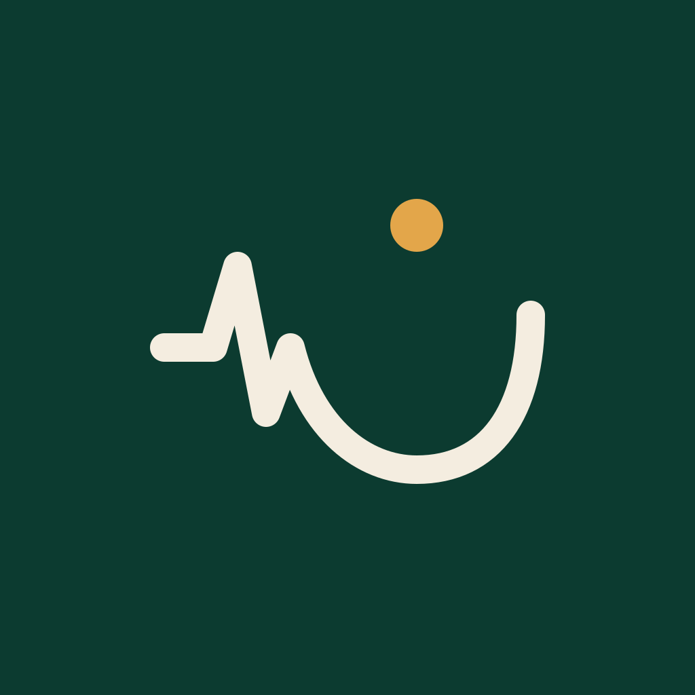

Nabd (نبض) — design board
Tüm ekran taslakları tek sayfada. Ayrı SVG dosyaları: design/screens, design/logo, design/splash. Palet ve kurallar: docs/01_BRAND_AND_DESIGN.md
Logo icons: emerald / cream / dark



Nabd Home (light + dark)
Nabd 3D viewer - anatomy tab
Nabd 3D viewer - diseases tab (myocardial infarction)
Nabd lesson flow - quiz step and reward screen
Nabd Admin - terms and translation
Nabd Admin - model and hotspot editor